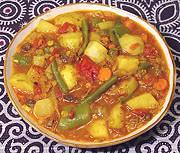

|
Tagine of Aromatic VegetablesMorocco | ||||
| serves: Effort: Sched: DoAhead: |
6 w/couscous *** 1-1/4 hrs Yes |
Tagines, aromatic stews, are normally served with Couscous - see our recipe Couscous. This will also go well with rice. The ingredient list may seem long, but its easy to make. | |||
|
----- 5 5 5 9 6 5 ----- 4 3 1 1 2 ----- 1/2 2 1/2 1 1/2 1/4 ----- 1 3/4 1/4 4 3 1/4 |
--- oz oz oz oz oz oz --- oz oz in cl --- t t t t t t --- # c c T c |
-- Vegetable Mix Onions Carrots Turnips, small Potatoes, waxy Bell Pepper, green Fennel Bulb -------------- Green Beans Celery w/leaves Chili, green (1) Ginger Root Garlic -- Spicing Turmeric Coriander seed Cumin seed Cinnamon ground Salt Pepper black ------------- Tomatoes (2) Preserved Lemon (3) Olive Oil, pure Stock Lentils, red Raisins |
PREP - (35 minutes)
|